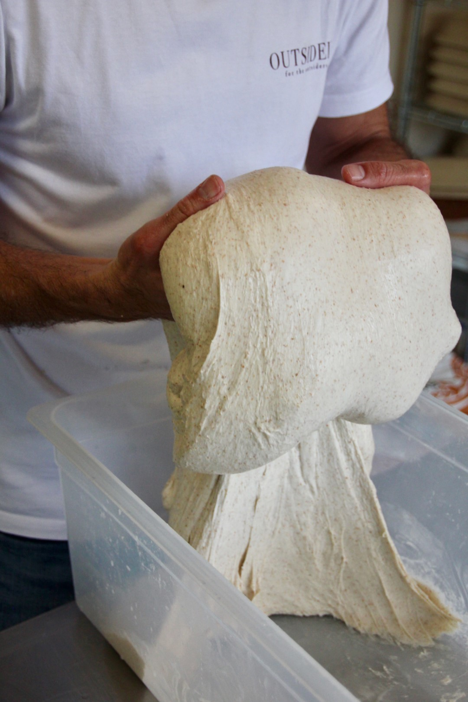

Learn to bake
Sourdough bread-making in a relaxed, small-group setting at our award-winning artisan bakery on the Causeway Coast.
Peatlands Sourdough Retreats
Peatlands Sourdough Retreats combine a two-night stay in luxury shepherd's hut accommodation with hands-on sourdough bread-making in a relaxed small-group setting at our award-winning artisan bakery.
Learn everything you need to make amazing sourdough at home — from building and maintaining a starter, to shaping, scoring and baking your own loaves. All skill levels welcome.
Baking classes and retreats are available via the Peatlands Causeway Coast site:
View Classes at Peatlands

Visit Peatlands Causeway Coast to find out about upcoming retreats and availability.
Find Out More